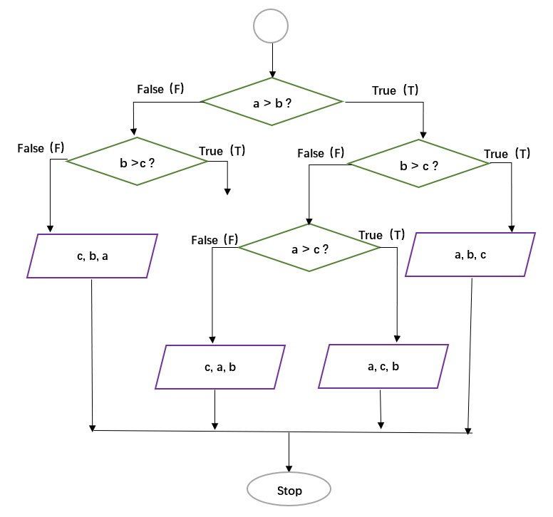

Out: 03/03 19:00
Due: 03/17 19:00
Collaboration:
Collaboration on solving the assignment is allowed, after you have thought about the problem sets on your own. It is also OK to get clarification (but not solutions) from online resources, again after you have thought about the problem sets on your own. There are two requirements:
Cite your collaborators fully and completely (e.g., “XXX explained to me what is asked in problem set 3”). Or cite online resources (e.g., “I got inspired by reading XXX”) that helped you.
Write your scripts and report independently - the scripts and report must come from you only.
Submitting your assignment:
Submit your R scripts and report to TA (12431312@mail.sustech.edu.cn)
Late Submission:
Late submissions will NOT receive any credit.
1.1 [10 points] [RS], p23, Exercise #8.
1.2 [10 points] [RS], p24, Exercise #17.
1.3 [10 points] [RS], p24, Exercise #18.
[10 points] Write a function
Print_values with arguments a, b,
and c to reflect the following flowchart. Here the purple
parallelogram operator is to print values in the given order.
Report your output with some random a, b,
and c values.

3.1 [5 points] Generate two matrices M1
(5 rows and 10 columns ) and M2
(10 rows and 5 columns ); both are filled with
random integers from 0 and 50.
[Hint: use the sample function to draw
random integers]
3.2 [10 points] Write a function
Matrix_multip to do matrix multiplication. Here you are
only allowed to use for loop,
* operator, and + operator.